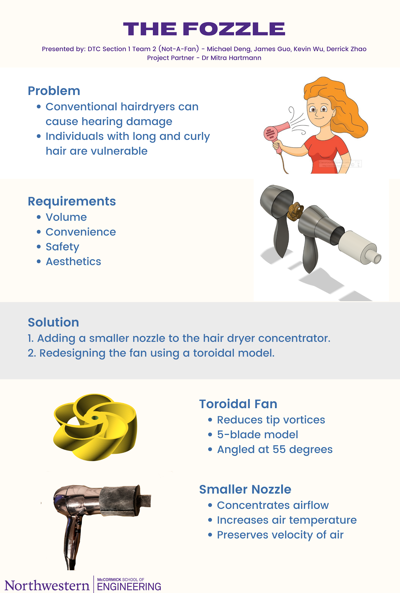
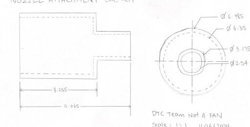
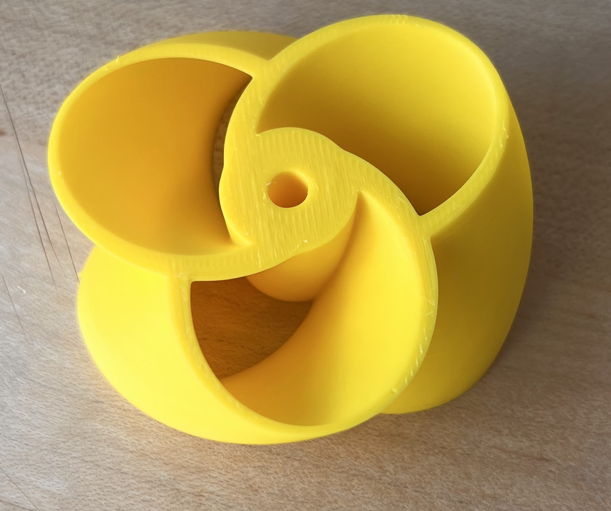
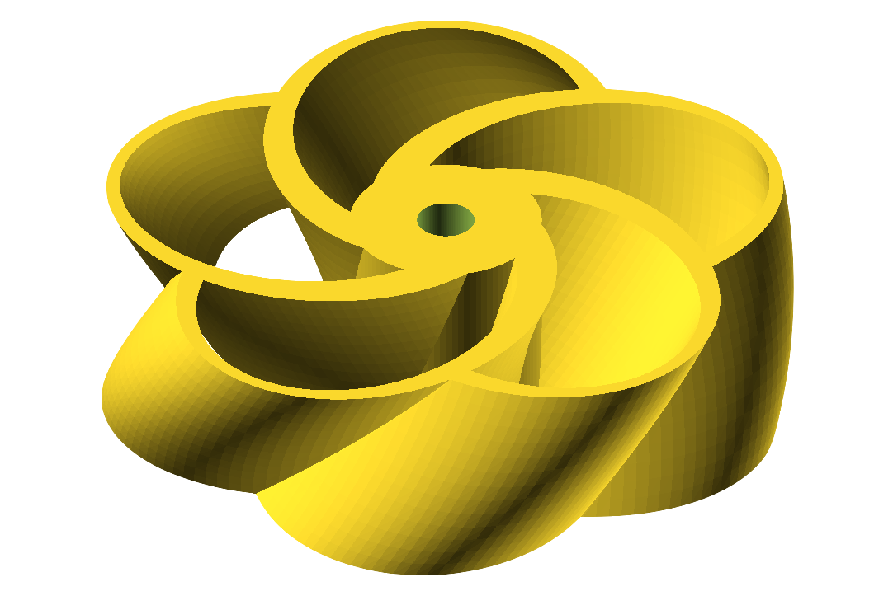
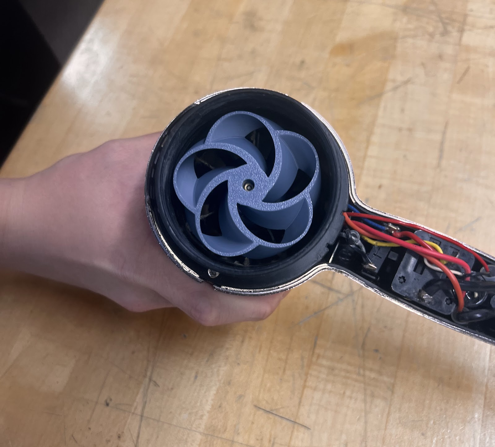
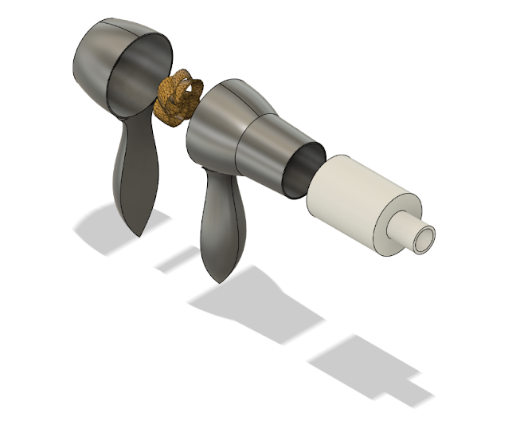
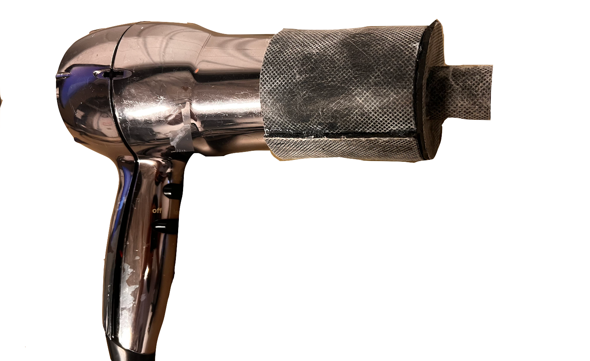

The Fozzle: a quieter hair dryer
Typical hair dryers run above 85 dB, loud enough to risk hearing damage. Our team built a quieter hair dryer for our client, and I owned the two main noise sources: the fan and the exiting air.
- Program
- Design Thinking and Communication, Northwestern
- Client
- Professor Mitra Hartmann
- Team
- 4 students
- Role
- Fan and nozzle design
- Dates
- Sep 2024 to Dec 2024

The challenge
User interviews confirmed that noise was the biggest complaint, so the first job was turning that feedback into a measurable target.

Fan and nozzle
I designed a toroidal fan, inspired by drone propellers, to cut the high-frequency noise from blade-tip vortices. I also designed the Fozzle nozzle itself, lined with mass loaded vinyl to absorb sound and concentrate airflow.
Thirty-plus iterations
I 3D printed and tested more than 30 fan iterations. For each one I measured sound level with a decibel meter and logged it against the target, then adjusted blade count and angle to balance noise against airflow.






88 → 76 dBMeasured noise, stock dryer to final prototype
30+Fan iterations printed and tested
The project grounded every engineering decision in what users told us, and showed me how fast a tight build-measure-adjust loop converges.